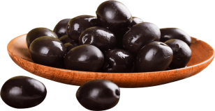

Bu tarif, sele ya da yağlı sele olarak bilinen kuru tuzlama yöntemidir. Zeytin su ve salamura kullanılmadan doğrudan tuza yatırılır. Tuz zeytinin suyunu çeker, acılığı veren oleuropein de bu suyla dışarı atılır. Isı ve kostik kullanılmadığı için zeytinin doğal yapısı ve aroması korunur. Sonuç buruşuk, yoğun aromalı ve yağlı bir sofra zeytinidir.